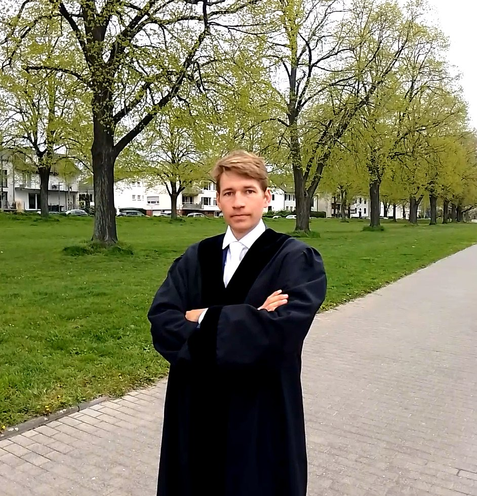

Tax Law
National and international tax matters — built on practical exposure at RSM Ebner Stolz, one of Germany's leading tax and advisory firms.
- Corporate taxation
- Cross-border
- Tax compliance
Jurist · LL.M. · Rechtsreferendar
Verlässlichkeit. Kompetenz.
German qualified jurist with European and international training. Currently in legal traineeship with the Higher Regional Court of Cologne — seconded to the European Commission, DG GROW in Brussels.

Bonn · Rheinaue
I
About
Trained in the rigorous German legal tradition and refined through a Master of Laws in European and International Law, my work bridges national craft and cross-border perspective.
I studied Rechtswissenschaft at the Rheinische Friedrich-Wilhelms-Universität Bonn, graduating mit Prädikat, and completed an LL.M. in European and International Law at the Universität des Saarlandes with the distinction Sehr gut. I am a scholar of the Konrad-Adenauer-Stiftung.
My legal traineeship at the Oberlandesgericht Köln has taken me through the civil courts and the public prosecutor's office. I am currently on assignment at the European Commission, Directorate-General for Internal Market, Industry, Entrepreneurship and SMEs (DG GROW) in Brussels — where European law and commercial reality meet on a daily basis.
I work across the full breadth of German private and public law, with a particular interest in tax, corporate, European and compliance matters.
II
Practice
Four fields where my training, interest and experience come together. As a German jurist, an allrounder across the wider canon.
National and international tax matters — built on practical exposure at RSM Ebner Stolz, one of Germany's leading tax and advisory firms.
Company structures, transactions and governance — supported by practice experience in a law, notary and insolvency firm spanning the full commercial life-cycle.
The Single Market from the inside out — currently with the European Commission's DG GROW, after an LL.M. in European and International Law and the EuroSim legislative simulation.
Where regulation meets operation. Grounded in experience at the Bundesnetzagentur, Germany's federal network regulator — and a deep instinct for procedural rigour.
Beyond these focus areas: as a fully trained German jurist I am an allrounder across civil, criminal and public law.
III
Career
Rechtsreferendariat · Legal Traineeship
Oberlandesgericht Köln
Stations completed at the Civil Court and the Public Prosecutor's Office. Currently seconded to the European Commission, DG GROW, Brussels.
Master of Laws (LL.M.)
Universität des Saarlandes
European and International Law. Graduated with the distinction Sehr gut. Elected course speaker.
Studium der Rechtswissenschaft
Rheinische Friedrich-Wilhelms-Universität Bonn
German State Examination in Law, completed mit Prädikat.
Year abroad
Caribbean School · Limón, Costa Rica
Year of secondary schooling overseas.
Abitur
Albert-Schweitzer-Gymnasium · Plettenberg
European Commission · DG GROW
Brussels · current legal traineeship station
Public Prosecutor's Office
Criminal prosecution station · Referendariat
Civil Court
Civil litigation station · Referendariat
RSM Ebner Stolz
Tax and corporate advisory
Bundesnetzagentur
Federal Network Agency · regulatory practice
Rechtsanwalts-, Notariats- & Insolvenzkanzlei
Private practice across litigation, notarial and insolvency work
Konrad-Adenauer-Stiftung e.V.
Scholarship recipient
Studierendenparlament, Universität Bonn
Various roles, 2019 – 2024 — including chair, board member, working-group lead
Bonn Negotiator e.V.
Negotiation training society
EuroSim
EU legislative simulation, 140 international students
School newspaper · editor
During secondary school
Ferienfreizeit · volunteer helper
Youth holiday programme
International
Educational exchange in England (2014). A school year in Costa Rica (2016). Cultural travel across Europe and beyond — Barcelona, Valencia, Paris, London, Brussels, Strasbourg, Copenhagen, Rome, Prague, Helsinki. Course speaker for a Master's programme spanning 25+ nationalities. Now: working European law from within the Commission itself.
IV
Contact
For professional enquiries, please reach out directly. I respond to all messages personally.
Scan to revisit